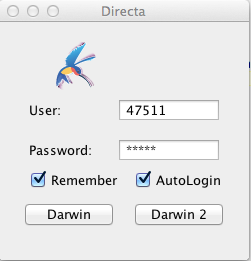
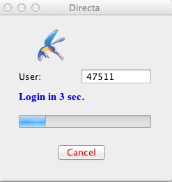

This page is meant to make possible to anyone who wants to plug-in personally developed or third party software into the information flow, and the trading systems of Directa S.I.M.p.A. The services are essentially three:
The method used is the typical one of the server socket, that is the connection to a port via the own local host (127.0.0.1). Three channels are available:
| PORT | SERVICE |
|---|---|
| 10001 | DATAFEED connection |
| 10002 | TRADING connection |
| 10003 | HISTORICAL CALLS connection |
It is in structuring phase the offer to the retail customers to run their own or third parties' software
in proximity, that is within the network of the same infrastructure in which Directa's servers connected to markets are located.This service is subject to legal and technical compliance assessments, made to make sure the respect of the current regulations;its cost and timing can greatly vary, depending on the user requests.
Note that, apart from the significant advantage of cutting the internet times in the round trip owing to the distance between the server and the user location, this arrangement does not provide an alternative channel and/or a preferential one in the order placement.
For further information about this option, please refer to the contacts below:
011 53.01.01
It is in structuring phase the possibility to create a Darwin tile.
The user, according to his own system, can interact with the current Darwin interface.
For further information on this option, please refer to the contacts below:
011 53.01.01
In Directa's Darwin trading platform project there is the possibility to integrate new functions, realized not only by the internal team of programmers, but also by independent programmers too.
The tools necessary to extend Darwin's functionality are completely free.
At the moment Directa is developing three different possibilities for the interface with the external software applications, whose present or future availability is specified below.
The current regulations do not allow in any circumstances the access to the services provided
by the Exchange Markets without the appropriate credentials,
and without agreeing to comply with some, very precise, disciplinary norms.
This is why Directa provides no trial account for the purpose of developing external applications:
it is necessary, first of all, that the programmer interested in using the interfaces and Darwin's API
to have a regular account number at Directa.
Price flow receiving
Service currently available
An external program can be connected to a specific local IP port of Darwin. By giving the appropriate subscription commands for the desired financial instruments, it will be possible to obtain from the program the realtime prices' data.
Orders' placement
Service available on the operating server
Darwin allows an external program to reach a second local IP port, different from the one reserved to the prices' flow, through which the program can transfer operational instructions to Directa servers (order, order modification, order cancellation) and receive related information (availability, portfolio, etc.).
Darwin tile creationAn under development service The programmer can create their own plug-ins for Darwin (which may become a tile in the platform, integrated with Darwin workspaces and other existing tiles), by using the instructions for the Darwin's API and the development kit, as supplied by Directa. The development kit and the instructions will be available as soon as possible.
The Prices Service plugin allows the user to export data from Darwin. The method used is the typical one of the server socket pending on one or more ports of the local host (localhost or 127.0.0.1, according to the operative system) of one or more TCP/IP connections from the client.
The messages, both for the subscription (client-->Darwin) and for the reception (Darwin-->client) are in string format (UTF-8) and end with the NEWLINE character (depending on the operating system).
In order to send/receive messages it is enough to use, respectively, a writeline or a readline (an instruction available in the most programming languages).
The plugin subscribes automatically on the Darwin system to the securities requested; in case of subscribing to the same security more than once, an error message would be received; analogously, an error occurs when trying to unsubscribed from a security that was not subscribed to before.
The maximum number of subscribable securities is the one set forth by Darwin platform.
If the user is enabled to the plug-in, the service is automatically started together with the Darwin platform; otherwise, the service is not available.
The service opens two sockets TCP/IP (one for the information and the other for the trading) ?Listening? on the set ports (by default 10001 and 10002 respectively) and waits for the messages from the client.
It is possible to open more than one connection on the same socket. The plugin will automatically manage the forwarding of the messages to the client that requested them.
The heartbeat is used to keep the connection active. In fact, in presence of poor quality connections, the socket may close unexpectedly.
In order to avoid this behaviour the prices' service sends and receives an "Heartbeat" packet composed of the character H (Ascii code 72).
Of course implementing the dispatch of the heartbat to Darwin is taken care of by the developer. The prices' service automatically sends the heartbeat every 10 seconds.
Heartbeat messages format:
H\NEWLINE
It's possible to request the prices' service information about the portfolio situation, by running some specific commands on the trading channel.
<ACTION CODE>\n
The possible values for <ACTION CODE> are the following:
| CODE | FLOW | ACTION |
|---|---|---|
| INFOSTOCKS | TRADING |
List of stocks in the portfolio and in negotiation |
| INFOAVAILABILITY | TRADING |
Situation of the availability in the portfolio |
| DARWINSTATUS | ALL |
Returns information about version and connection status |
| GETPOSITION | TRADING |
Returns information about the position of a single segurity in the same format as the INFOSTOCKS command |
| INFOACCOUNT | TRADING |
Returns information about the asset balance of the account |
| ORDERLIST | TRADING |
Returns the orders list (all) |
| TABLELIST | ALL |
Restituisce le tabelle impostate sul proprio conto |
| TABLE | ALL |
Restituisce l'elenco dei tickers presenti in una determinata tabella |
NB part of the reason for creating these commands is that, we've decided not to weigh down further on the initial connection to the trading system, and therefore, if the order list is greater than or equal to 100, the order list will be equivalent to the ORDERLISTNOREV command, so, you will have, as an initial detail: the executed orders, and any pending orders, if there were no pending or executed orders, but the list of the cancelled orders exceeds 100. then an error code 1019 will be sent, even though the list is not actually empty. needless to say that,the possibility to check with the native ORDERLIST command, including all orders is always guaranteed.
The prices' service sends to the client the informative messages on the trading socket in the form of a string, and, ending with the NEWLINE (ASCII 10 \n) character.
The general format of the message is the following:
<MESSAGE_TYPE> ; <TICKER> ; <TIME HH:MM:SS>;<DATA...> \n
The possible values for <MESSAGE TYPE> are the following:
| CODE | FLOW | MEANING |
|---|---|---|
| STOCK | TRADING |
Information about the portfolio (owned stocks and in negotiation) |
| AVAILABILITY | TRADING |
Portfolio availability (with and without leverage) |
| DARWIN_STATUS | ALL |
String with information about the connection and the version |
| INFOACCOUNT | TRADING |
Information about the account status |
| ORDER | TRADING |
Orders list |
NB: The STOCK data flow is triggered by the commands:NB: Indication of the field <TRADING QUANTITY>| CODE | MEANING |
|---|---|
| CONN_UNAVAILABLE | Unavailable connection |
| CONN_SLOW | Slow connection |
| CONN_OK | Available connection |
| CONN_TROUBLE | Connection with troubles |
NB The time of the ORDER flow indicates the exact placing time of the order.
| CODE | MEANING |
|---|---|
| 2000 | In negotiation |
| 2001 | Entry error |
| 2002 | Trading after validation received |
| 2003 | Filled |
| 2004 | Cancelled |
| 2005 | Waiting for validation |
NB: For to use the command TABLE <name_table> it's necessary to call before the command TABLELIST.
Below are the codes displayed to the client in case of ERR message:
| COD | NAME | DESCRIPTION | FLOW |
|---|---|---|---|
| 0 | ERR_UNKNOWN | Generic error | ALL |
| 1000 | ERR_MAX_SUBSCRIPTION_OVERFLOW | Reached the maximum number of subscribable securities | DATAFEED |
| 1001 | ERR_ALREADY_SUBSCRIBED | Requested security already subscribed | DATAFEED |
| 1002 | ERR_EMPTY_LIST | No security sent in the command | DATAFEED |
| 1003 | ERR_UNKNOWN_COMMAND | Unknown command | ALL |
| 1004 | ERR_COMMAND_NOT_EXECUTED | Command not executed | ALL |
| 1005 | ERR_NOT_SUBSCRIBED | Subscription error | ALL |
| 1006 | ERR_DARWIN_STOP | Darwin closure in progress | ALL |
| 1007 | ERR_BAD_SUBSCRIPTION | Non existing security error | ALL |
| 1008 | ERR_DATA_UNAVAILABLE | Requested flow unavailable | DATAFEED |
| 1009 | ERR_TRADING_CMD_INCOMPLETE | Incomplete trading command | TRADING |
| 1010 | ERR_TRADING_CMD_ERROR | Wrong trading command | TRADING |
| 1011 | ERR_TRADING_UNAVAILABLE | Trading unavailable | TRADING |
| 1012 | ERR_TRADING_REQUEST_ERROR | Order entry error | TRADING |
| 1018 | ERR_EMPTY_STOCKLIST | No security in the portfolio | TRADING |
| 1019 | ERR_EMPTY_ORDERLIST | No order is present | TRADING |
| 1020 | ERR_DUPLICATED_ID | Duplicated order ID | TRADING |
| 1021 | ERR_INVALID_ORDER_STATE | Order status inconsistent with the required operation | TRADING |
| 1024 | ERR_TRADING_PUSH_DISCONNECTED | Directa trading is disconnected | TRADING |
SUBSCRIPTION/UNSUBSCRIPTION COMMANDS
NB It's important to remember that, regardless of the number of connections established with the 10001 port, the maximum limit of subscribable securities by Darwin is currently 100.
| CODE | FLOW | PORT | TYPE | DATA |
|---|---|---|---|---|
| SUB | DATAFEED |
10001 | Standard subscription | Filled orders + 5 levels book |
| SUBALL | DATAFEED |
10001 | All the flows | Filled orders + 5 levels book + Bidask |
| SUBPRZ | DATAFEED |
10001 | Prices only | Filled orders |
| SUBPRZALL | DATAFEED |
10001 | Prices and bidask | Filled orders + Bidask |
| CODE | TYPE | PORT | DATA |
|---|---|---|---|
| UNS | Unsubscription | 10001 | All the flows |
NB: The subscription/unsubscription codes are case sensitive; it is not possible to change the type of subscription to a stock. It is necessary to unsubscribe the security and resubscribe it with the desired code..
FORMAT OF THE MESSAGES
| CODE | FLOW | DESCRIPTION |
|---|---|---|
| ANAG | DATAFEED |
Registry information |
| PRICE | DATAFEED |
Filled order |
| PRICE_AUCT | DATAFEED |
Filled in auction (all the auctions) |
| BOOK_5 | DATAFEED |
5 levels book |
| BIDASK | DATAFEED |
Bid/ask |
NB: The data regarding the number of PROPOSALS may not be available depending on the market.NB: The element related to the number of offers could be unavailable, according to the market to which the stock belongs.HISTORICAL CALLS section, and use the Tickers in the above-mentioned list.
NB: For the historic calls, you must use the indices' Tickers in Uppercase, if you type them differently the tickers will not be recognized.
It is possible to manage the LOG detail by sending some specific commands on the prices channel.
<COMMAND CODE> {<OPTIONS>}\n
The possible values for <COMMAND CODE> are the following:
| CODE | FLOW | ACTION |
|---|---|---|
| ENABLELOG | DATAFEED |
Enables the maximum detail log. |
| DISABLELOG | DATAFEED |
Disables the LOG. Only important messages and errors will be tracked |
The prices' service sends diagnostic messages to the client on the prices socket in a string form, ending with the NEWLINE (ASCII 10 \n) character.
The generic format of the messages is the following:
<MESSAGE_TYPE>\n
The possible values for <MESSAGE_TYPE> are the following:
| CODE | MEANING |
|---|---|
| LOG_ENABLED | The maximum detail LOG is enabled. |
| LOG_DISABLED | The maximum detail LOG is disabled. |
HISTORICAL CALLS
To perform trading operations, it is necessary to send a message in the following format:
<ACTION CODICE> &nbps;{<ORDER_ID>},{<TICKER>,<QUANTITY>},{<PRICE>}\n
The Prices' Service may request the client the order confirmation. In this case, it is necessary to answer with the correct code, as indicated in the following chart, and the corresponding <ORDER_ID>.
<ORDER_ID> must be generated by the client, and be univocal for the current session of connection to the socket.
The possible values for <ACTION CODE> are the following:
| CODE | FLOW | ACTION |
|---|---|---|
| ACQAZ | TRADING |
Buy stocks at the specified limit price |
| VENAZ | TRADING |
Sell stocks at the specified limit price |
| ACQMARKET | TRADING |
Buy stocks at the market price |
| VENMARKET | TRADING |
Sell stocks at the market price |
| ACQSTOP | TRADING |
Buy stocks with stop market price |
| VENSTOP | TRADING |
Buy stocks with stop market price |
| ACQSTOPLIMIT | TRADING |
Buy stocks with limit price and trigger price |
| VENSTOPLIMIT | TRADING |
Sell stocks with limit price and trigger price |
| REVORD | TRADING |
Cancel the specified order |
| REVALL | TRADING |
Cancel all the orders for the specified ticker |
| CONFORD | TRADING |
Confirm the specified order |
| MODORD | TRADING |
Change price for the specified order |
NB
The REVALL applies only to the regular orders and not for those with the limit condition,
where it's necessary to
carry out a timely cancellation of the order through REVORD <id_ordine>,
as it's the same behavior as that of Darwin.https://www1.directatrading.com
The Prices Service sends the client the result of trading operations in a string format, ending with the NEWLINE (ASCII 10 \n) character.
The generic message format is the following:
<MESSAGE_TYPE> ; <TICKER> ; <ORDER_ID> ; <CODE> ; <SENT COMMAND> ; <ASKED QUANTITY|FILLED QUANTITY> ; <PRICE ENTRY> ; <ERROR DESCRIPTION>\n
The possible values for <MESSAGE TYPE> are the following:
| CODE | FLOW | MEANING |
|---|---|---|
| TRADOK | TRADING |
Positive outcome of the operation (PLACEMENT, EXECUTION, CANCELLATION) |
| TRADERR | TRADING |
Negative outcome |
| TRADCONFIRM | TRADING |
Needed order confirmation from the client |
| CODE | MEANING |
|---|---|
| 3000 | Request correctly received |
| 3001 | Request executed |
| 3002 | Request cancelled |
| 3003 | Order confirmation needed |
TRADING
After several suggestions, we have made an efffort to create some commands to extend the set of information retrievable through the API.
At the moment, special attention has been given to the expansion of the trading related information.
The chioce was made to safeguard the Trading Systems currently in use, and to create commands that can be activated and deactivated to access the features.
The following are the new available commands:
| COMMAND | MEANING | VALUE | DEFAULT |
|---|---|---|---|
| FLOWPOINT | Start & End markers of the data flow packages | FALSE / TRUE | FALSE |
| UPDATEORDER | Possibility, at order submission, to receive updates without having to send specific commands | FALSE / TRUE | FALSE |
| PRICEEXE | fields related to the trade execution price are added, quantity and Order_ID relating to the TRADOK and ORDER packages | FALSE / TRUE | FALSE |
| LOGCMD | added at the end of TRADOK and TRADERR packages of the command that has generated the package | FALSE / TRUE | FALSE |
| POINTUPDATEORDER | a new way to have an automatic update on one's own situation with regard to trade operation. | FALSE / TRUE | FALSE |
| AUTOREC | an automatic method of restoring trading connection because of line drops | FALSE / TRUE | FALSE |
FLOWPOINT COMMANDUPDATEORDER COMMAND| OPERATION | DESCRIPTION |
|---|---|
| PLACING ORDER | In addition to the package TRADOK (with the code 3000) the ORDER package will be sent, relating to the entered order, and the information on the balance status of the account, the package INFOACCOUNT |
| CHANGED ORDER | in addition to TRADOK (with the code 3000) the ORDER package will be sent relative to the changed order, the STOCK of the financial instrument, the details of the command AVAILABILITY-Liquidity portfolio (with or without margin) and information on the balance status of the account, the package INFOACCOUNT (this will appear twice, having been made an change). |
| EXECUTED ORDER | when an order should be executed TRADOK detail comes out (with code 3001) and in addition, the detail of the order through the package ORDER, the relative STOCK of the security, the detail AVAILABILITY-Liquidity of the portfolio (with or without margin) and information on the balance status of the account, the INFOACCOUNT package. |
| CANCELED ORDER | in addition to the TRADOK package (with the 3002 detail) moreover, there will be the STOCK package related to the financial instrument, the detaile: AVAILABILITY-Liquidity portfolio (with or without margin) and the information on the balance situation of the account, the INFOACCOUNT package. |
COMMAND PRICEEXENBThe fields will be added later on in the order in which they were described, the other fields will be in the same original order, that's without the activation of the PRICEEXE command.COMMAND LOGCMDPOINTUPDATEORDER COMMANDNBThe fields are all initialized with a U to highlight the fact that, the field is related to the update, and so to avoid confusion compared to the other fields.
Below, a usage example is given: (in blue will be identified the lines sent to the socket, those received in black, and in bold type we will instead highlight the new fields)2006;0.0;0.0;0;S4216523407947NB by activating this command, the changed orders will have, as a detail for the order status the value of 2006, and this' was required to have a distinguishing detail compared to the standard codes of 2000/2002,
this code will also have an effect on the ORDERLIST command, if the command will gets disabled, the detail in 2006 will no longer be available and you will return to the default of (2000/2002))
NB We recommend, to to avoid errors, to keep enabled only one update method, therefore, either the command UPDATEORDER, or the command POINTUPDATEORDER should be active. If both the commands are activated
POINTUPDATEORDER will have higher priority, and, in case one becomes disabled, both of them will then be disabled,This is to avoid the risk of requesting inaccurate updates.
THE AUTOREC COMMAND(currently in a testing phase)| TIME FRAME | Maximum Depth(historical maximum available) |
|---|---|
| 1 and 5 seconds | Maximum 1 day |
| 10 and 30 seconds | Maximum 3 days |
| 1, 2, 3 and 4 minutes | Maximum 40 days |
| END OF DAY | Maximum 5 years |
To enable the connection you need to connect with the socket on the 10003 port
You can use four commands:
To use the commands you need to insert a space between the arguments.
The Usage 1 and Usage 2 commands are related to the historical calls of TickByTick type, while the
Usage 3 and Usage 4 commands are specific for the Candles.
Usage 1:
TBT stock number_of_days
stock: The code of the stock
number_of_days: The number of days (including today) of history depth
Usage 2:
TBTRANGE stock start_date end_date
stock: The code of the stock
start_date_time: The starting date of the requested time range, in the format yyyyMMddHHmmss
end_date_time: The ending date of the requested time range, in the format yyyyMMddHHmmss
Usage 3:
CANDLE stock number_of_days candle
stock: The code of the stock
number_of_days: The number of days (including today) of history depth
candle: The period in seconds for a candlestick representation.
Usage 4:
CANDLERANGE stock start_date_time end_date_time candle
stock:The code of the stock
start_date_time:The starting date of the requested time range, in the format yyyyMMddHHmmss
end_date_time: The ending date of the requested time range, in the format yyyyMMddHHssmm
candle: The period in seconds for a candlestick representation.
If the arguments are not correct you will receive an error reply
If the number of days is wrong you will receive the following error reply: Wrong number_of_days value
If the period is wrong you will receive the following error reply: Wrong candle value
If the data range is wrong you will receive the following error reply: Wrong start_date and/or end_date value.
If some arguments are missing you will receive the following error reply: Not enough parameters.
SETTING THE DETAIL OF VOLUMES DURING AFTERHOURS
Description for the command VOLUMEAFTERHOURS
Command to set the detail of the volumes during AFTERHOURS (AH), for securities that are AH.
By default the phase of AH the service responds to the detail of the volumes with the sum of the volumes of the more continuous volumes of the AH.
If you wanted to change this detail is at our disposal the command:
VOLUMEAFTERHOURS
Can be used in two different ways:
Only typing VOLUMEAFTERHOURS which response will tell how is the choice set.
the choices are as follows:
| PARAMETER | DESCRIPTION |
|---|---|
| CNT | retail volume continuous phase |
| AH | Retail volumes during afterhours |
| CNT+AH | sum of the volumes continues + afterhours |
Examples for the information of the setting: typing VOLUMEAFTERHOURS you can have three types of responses:
| VOLUME_AFTERHOURS CNT+AH default indicates the sum of the volumes in the volumes continues with the volumes AH |
| VOLUME_AFTERHOURS AH setting that indicates that the volumes will be displayed in AH |
| VOLUME_AFTERHOURS CNT setting that indicates that the volumes will be displayed in continuous |
Examples for changing the setting of retail volumes:
|
Set as volumes CNT + AH
command: VOLUME_AFTERHOURS CNT+AH reply: VOLUME_AFTERHOURS CNT+AH, indicates that the setting in the CNT + AH was performed |
|
Set as volumes CNT
command: VOLUME_AFTERHOURS CNT reply: VOLUME_AFTERHOURS CNT, indicates that the setting in the CNT was performed |
|
Set as volumes AH
command: VOLUME_AFTERHOURS AH reply: VOLUME_AFTERHOURS AH, indicates that the setting in the AH was performed |
Example for the use of the command VOLUMEAFTERHOURS:
in this example are shown with TX commands sent while with RX answers.
17:58:50 TX Connection socket localhost port:100003
17:58:52 RX DARWIN_STATUS;CONN_OK;Release 1.2.122 06/11/2014 16:51:50 more info...
18:00:11 TX VOLUMEAFTERHOURS
18:00:12 RX VOLUME_AFTERHOURS CNT+AH
18:00:23 TX CANDLE FCA 1 86400
18:00:23 RX BEGIN CANDLES
18:00:33 RX CANDLE;FCA;20141106;09:00:00;8.82500;8.80000;9.01500;8.85000;11597547
18:00:33 RX END CANDLES
18:00:41 TX VOLUMEAFTERHOURS CNT
18:00:41 RX VOLUME_AFTERHOURS CNT
18:00:47 TX CANDLE FCA 1 86400
18:00:47 RX BEGIN CANDLES
18:00:57 RX CANDLE;FCA;20141106;09:00:00;8.84500;8.80000;9.01500;8.85000;11597147
18:00:57 RX END CANDLES
18:01:02 TX VOLUMEAFTERHOURS AH
18:01:02 RX VOLUME_AFTERHOURS AH
18:01:29 TX CANDLE FCA 1 86400
18:01:29 RX BEGIN CANDLES
18:01:39 RX CANDLE;FCA;20141106;09:00:00;8.82500;8.80000;9.01500;8.85000;400
18:01:39 RX END CANDLES
18:01:57 TX VOLUMEAFTERHOURS CNT
18:01:57 RX VOLUME_AFTERHOURS CNT
18:02:01 TX CANDLE FCA 1 86400
18:02:01 RX BEGIN CANDLES
18:02:11 RX CANDLE;FCA;20141106;09:00:00;8.84500;8.80000;9.01500;8.85000;11597147
18:02:11 RX END CANDLES
18:02:38 TX VOLUMEAFTERHOURS CNT+AH
18:02:38 RX VOLUME_AFTERHOURS CNT+AH
18:02:43 TX CANDLE FCA 1 86400
18:02:43 RX BEGIN CANDLES
18:02:53 RX CANDLE;FCA;20141106;09:00:00;8.82500;8.80000;9.01500;8.85000;11597547
18:02:53 RX END CANDLES
The volumes are in bold, and you can see how detailed changes according to our setting,
NB at the end of the connection will return to the default situation (CNT + AH)
In this section are reported some examples of the reply after having sent a command for the historical calls, each example is related to one of the four available commands.
1.50 - 07/04/2016.07/04/2016 Latest release available plugin Multicharts
1.0.0 - 29/07/2016
04/07/2016 First release of the Beta version
1.0.0 - 29/07/2016.
29/07/2016 First release of the Beta version
 
NB
Darwin 2.0 is currently available allowing access to the API service. For any doubts/questions, in this regard, please contact Directa's API service .
It is possible, once started Darwin, to test whether the Prices Service is correctly working. It is enough to be connected on the pc locally using the TELNET function on the port of the service (default 10001).
It is possible to use the TELNET command for all the defined ports, i.e. the 10001 (DATAFEED), 10002 (Trading) and 10003 (Historical calls).
Once connected, run the command and type enter (corresponding to the NEWLINE \n ascii 10 character). The system will start sending data.
The command to be typed in order to verify the connection is: telnet localhost -port-
Below is an example on a OSX system:
MacBook-Pro:~$ telnet localhost 10001
Trying ::1...
Connected to localhost.
Escape character is '^]'.
H
SUBALL F
PRICE F 15:58:52;3.446;4388;16063708;6673
PRICE F 15:58:52;3.446;0;16063708;6673
BOOK_5 F 15:59:02;8549;4;3.444;25996;11;3.442;57070;16;3.44;39874;11;3.438;21293;7;3.436;75777;14;3.45;33945;12;3.452;28217;10;3.454;38092;11;3.456;24600;8;3.458
BIDASK F 16:00:01;8549;0;3.444;75777;0;3.45
BOOK_5 F 15:59:03;8549;4;3.444;25996;11;3.442;59981;18;3.44;39874;11;3.438;21293;7;3.436;75777;14;3.45;33945;12;3.452;28217;10;3.454;38092;11;3.456;24600;8;3.458
BOOK_5 F 15:59:03;8549;4;3.444;25996;11;3.442;59981;18;3.44;39874;11;3.438;21293;7;3.436;75777;14;3.45;29600;11;3.452;28217;10;3.454;38092;11;3.456;24600;8;3.458
BOOK_5 F 15:59:04;8549;4;3.444;25996;11;3.442;59981;18;3.44;34734;10;3.438;21293;7;3.436;75777;14;3.45;29600;11;3.452;28217;10;3.454;38092;11;3.456;24600;8;3.458
BOOK_5 F 15:59:05;8549;4;3.444;25996;11;3.442;59981;18;3.44;34734;10;3.438;21293;7;3.436;75777;14;3.45;33945;12;3.452;28217;10;3.454;38092;11;3.456;24600;8;3.458
BOOK_5 F 15:59:06;8549;4;3.444;25996;11;3.442;59981;18;3.44;34734;10;3.438;21293;7;3.436;75777;14;3.45;29600;11;3.452;28217;10;3.454;38092;11;3.456;24600;8;3.458
BIDASK F 16:00:01;12904;0;3.444;75777;0;3.45
BOOK_5 F 15:59:06;8549;4;3.444;25996;11;3.442;59981;18;3.44;34734;10;3.438;21293;7;3.436;75777;14;3.45;29600;11;3.452;23875;9;3.454;38092;11;3.456;24600;8;3.458
BIDASK F 16:00:01;8549;0;3.444;75777;0;3.45
BIDASK F 16:00:01;8549;0;3.444;77277;0;3.45
BOOK_5 F 15:59:06;8549;4;3.444;25996;11;3.442;59981;18;3.44;34734;10;3.438;21293;7;3.436;77277;15;3.45;28100;10;3.452;23875;9;3.454;38092;11;3.456;24600;8;3.458
BOOK_5 F 15:59:07;8549;4;3.444;25996;11;3.442;59981;18;3.44;34734;10;3.438;21293;7;3.436;77277;15;3.45;28100;10;3.452;28217;10;3.454;38092;11;3.456;24600;8;3.458
BIDASK F 16:00:01;4549;0;3.444;77277;0;3.45
BOOK_5 F 15:59:08;90;1;3.444;20139;9;3.442;61481;19;3.44;34734;10;3.438;21293;7;3.436;86405;16;3.45;32445;11;3.452;28217;10;3.454;38092;11;3.456;24600;8;3.458
H
H
H
H
^]
telnet> quit
Connection closed.
MacBook-Pro:~ $
//DarwinClient.cs Class that implements the functions Socket
//CLASS DARWINCLIENT
using System;
using System.Net.Sockets;
namespace DarwinClient
{
public class DarwinClient
{
private TcpClient clientSocket;
private String host;
private int port;
private NetworkStream serverStream;
private System.IO.StreamReader streamReader;
//Constructor - sets HOST and PORT connection
public DarwinClient (String host, int port)
{
this.host = host;
this.port = port;
clientSocket = new TcpClient ();
}
//Opens the connection to the server
public void startConnection ()
{
clientSocket.Connect (this.host, this.port);
serverStream = clientSocket.GetStream ();
streamReader = new System.IO.StreamReader (clientSocket.GetStream ());
}
//Terminates the connection
public void endConnection ()
{
clientSocket.Close ();
}
//Sends the command to the server ( automatically adds the NEWLINE )
public void sendCmd (String msg)
{
byte[] outStream = System.Text.Encoding.ASCII.GetBytes (msg + "\n");
serverStream.Write (outStream, 0, outStream.Length);
serverStream.Flush ();
}
//Reads a line from the server
public String readLine ()
{
String returndata = streamReader.ReadLine ();
return returndata;
}
}
}//end class
//Main.cs Main program that uses the class DarwinClient and print console data for 120 seconds before closing the connection
//CLASS MAIN
using System;
namespace DarwinClient
{
class MainClass
{
public static void Main ()
{
Console.WriteLine ("Starting client...");
try {
//Instantiate the class that server to handle the socket
DarwinClient dClient = new DarwinClient ("localhost", 10001);
//Open the connection
dClient.startConnection ();
Console.WriteLine ("Connection to localhost:10001 successfull");
//Send the command (standard subscription Fiat Book + Price + Bidask)
String cmd = "SUBALL F";
dClient.sendCmd (cmd);
Console.WriteLine (" --> " + cmd);
String line = null;
long start = DateTime.UtcNow.Ticks;
bool continua = true;
//Read for 120 seconds
while (continua) {
//Read the next line
line = dClient.readLine ();
if (line != null) {
Console.WriteLine (" <-- " + line);
}
long now = DateTime.UtcNow.Ticks;
long sec = (now - start) / 10000000;
if (sec > 120) {
continua = false;
}
}
//End the subscription
Console.WriteLine ("Terminating subscriptions");
dClient.sendCmd ("UNS F");
Console.WriteLine ("Connection closed");
//Close the socket
dClient.endConnection ();
} catch (Exception exx) {
//If there are errors we display them
Console.WriteLine ("Error in DarwinClient: " + exx.Message);
Console.WriteLine (exx.StackTrace);
}
}
}
}//end class
//Example in java for connection to the receiving port of the flow rates 10001
import java.io.BufferedReader;
import java.io.IOException;
import java.io.InputStreamReader;
import java.io.PrintWriter;
import java.net.Socket;
import java.util.Scanner;
/**
*Class example to connect to port 10001 DataFeed .
*Makes into connection is called a command input,
*given this command will start the disclosure of the title/s for 60 seconds.
*Past the minutes will be signed on the title/s and closed the connection.
*
*Obviously if you enter an invalid command there will be error code and closing.
*/
public class ConnectDataFeed{
Socket s; //use the socket for connection
PrintWriter pW; //provides methods print and println , which allow you to write any given Java , converting it automatically in string.
BufferedReader bfr; //uses a buffer to temporarily store the characters to read / write
int porta; //port on which to access
String host; //host on which to access
//variables for code development
static String tick;
static boolean verifica=true;
/**
*Constructor,in this case we initialize the host and port to connect
/*
public ConnectDataFeed(int porta,String host){
this.porta=porta;
this.host=host;
}
/**
*Connection to the socket.
*Create the socket PrintWriter and the buffer.
*/
private void Connection(){
try{
s = new Socket(host, porta);
pW = new PrintWriter(s.getOutputStream(), true);
bfr = new BufferedReader(new InputStreamReader(s.getInputStream()));
System.out.println("Connection successful");
System.out.println(RLine());
} catch (Exception e) {
System.err.println("Unable to connect to the DataFeed: " + e );
}
}
/**
*Method for the closing of the connection.
*/
private void closeConnection(){
try {
System.out.println("Shutting.");
pW.close();
bfr.close();
s.close();
System.out.println("closing performed!");
} catch (Exception e){
System.err.println("Error disconnecting from the DataFeed: " + e);
}
}
/**
* Method to do the send command given input
* @param cmd the command
/*
private void sendCommand(String cmd){
pW.println(cmd);
}
/**
* Method to print the contents of the buffer.
* @return string containing the string buffer
*/
private String RLine(){
String line = null;
try {
line = bfr.readLine();
} catch (IOException e) {
e.printStackTrace();
}
return line;
}
/**
* Method used for the printing of the buffer for a number of seconds taken into input
*/
private void sott_nsec(){
int timer=120;//seconds
boolean continue=true;
String line="";
long start= System.currentTimeMillis();//variable for the timer
System.out.println("Print for -->"+timer+"<-- seconds the subscriptions for "+tick);
while(continue){
line=RLine();//takes the message from the buffer
if(line.startsWith("ERR")){
continue=false;
verifica=false;
}
System.out.println(line);//printing the answer
long now=System.currentTimeMillis();//management of the timer
long tot= (now-start)/1000;
if(tot>timer) continue=false;
}
}
/**
* Method used to derive the ticker of the title by the command input
* This method is not essential but it serves to show how unsubscribe a title .
* It is not important because when you close the connection securities underwritten are unsubscribe.
* @param cmd input command
* @return ticker
*/
private String formatTick(String cmd){
String formats=cmd.replace(" ", "\t\t\t\t\t\t\t\t");
String tick=formats.substring(formats.length()-8,formats.length()).trim();
return tick;
}
//The main class
public static void main(String args[]){
System.out.println("TEST DATAFEED");
ConnectDataFeed t=new ConnectDataFeed(10001,"localhost");//object creation
t.Connection();//Connection
Scanner scanner = new Scanner(System.in); //Variable management input
System.out.print("Type the command:");
String cmd = scanner.nextLine();//input command
t.sendCommand(cmd);//sending the command
//Call of the print buffer, with controls
if(cmd.startsWith("SUB")){
tick=t.formatTick(cmd);//To take the ticker
t.sott_nsec();//method for the subscription for n seconds
if(verifica==true){
System.out.println("\n unsubscription the title---> UNS "+tick);
}
}
else
System.out.println(t.RLine());
t.closeConnection();//close connection
}
}
#include <stdio.h>
#include <stdlib.h>
#include <unistd.h>
#include <string.h>
#include <sys/types.h>
#include <sys/socket.h>
#include <netinet/in.h>
#include <netdb.h>
//A method for handling errors,not essential for the connection
void error(const char *msg)
{
perror(msg);
exit(0);
}
//Main class
int main(int argc, char *argv[])
{
int sockfd, portno, n;
struct sockaddr_in serv_addr;
struct hostent *server;
int i=0;
char buffer[256];
char command[256];
int nb;
int nLine=100;
printf("Connection to DATAFEED\n\n");
char host[20];
sprintf(host,"localhost");
//variable containing the port number
portno=10001;
//opening socket
sockfd = socket(AF_INET, SOCK_STREAM, 0);
if (sockfd < 0)
error("ERROR opening socket");
//to set the host variable in this case localhost(127.0.0.1)
server=gethostbyname(host);
if (server == NULL) {
fprintf(stderr,"ERROR, no such host\n");
exit(0);
}
//connection management to the socket
bzero((char *) &serv_addr, sizeof(serv_addr));
serv_addr.sin_family = AF_INET;
bcopy((char *)server->h_addr,
(char *)&serv_addr.sin_addr.s_addr,
server->h_length);
serv_addr.sin_port = htons(portno);
//Management for any errors in connection with the socket
if (connect(sockfd, (struct sockaddr *) &serv_addr, sizeof(serv_addr)) < 0)
error("ERROR connecting");
bzero(buffer,256);
n = write(sockfd, command, strlen(command));
if (n < 0)
error("ERROR writing to socket");
bzero(buffer,256);
n = read(sockfd, buffer, 255);
if (n < 0)
error("ERROR reading from socket");
//Printing successful connection
printf("CONNECTION SUCCESSFUL on port%d\n",portno);
printf("%s\n", buffer);
//send the client's control in this case as the subscription of FCA
nb=sprintf(buffer,"SUB FCA\n");
write(sockfd,buffer,nb);
while(i<=nLine){
//Reading and printing the buffer or the server response
//Print the first 100 rows, then exits the loop
nb=read(sockfd,buffer,256);
buffer[nb]=0;
printf("%d Message from server: %s\n",i,buffer);
i++;
}
//Closing the connection to the socket.
printf("Closing the connection\n");
close(sockfd);
return 0;
}//end main
NB: SAFETY For this example shows a command invented that does no order.
import java.io.BufferedReader;
import java.io.IOException;
import java.io.InputStreamReader;
import java.io.PrintWriter;
import java.net.Socket;
import java.util.Vector;
/**
* Class of example for connecting to the Trading through port 10002.
* This example connects the situation and printing portfolio and the list of orders.
* Then he makes an example of a command to send trading, for safety you entered a command that does NOTHING.
* After sending the command you will get the answer to video and will close the connection and terminate the program.
*
* LOOK OUT:having put a command NULL obviously the answer is NULL, screen will display an H (HeartBeat),
* but this is not the answer, but what goes on at that time, that is NULL.
* /
public class TradingConnect{
Socket s; //we use the socket for connection
PrintWriter pW; //provides methods print and println, which allow you to write any given Java, converting it automatically in string.
BufferedReader bfr; //uses a buffer to temporarily store the characters to read/write
int porta; //port on which to access
String host; //host on which to access
Vector ordini=new Vector();
TradingConnect(int porta,String host){
this.porta=porta;
this.host=host;
}
/**
* Connection to the socket.
* To create the socket PrintWriter and the buffer.
/*
private void Connessione(){
try {
s = new Socket(host, porta);
pW = new PrintWriter(s.getOutputStream(), true);
bfr = new BufferedReader(new InputStreamReader(s.getInputStream()));
System.out.println("Connection Successful");
System.out.println(RLine());
System.out.println(RLine());
boolean state=true;
System.out.println("List orders");
System.out.print("Loading");
while(state){
String line=RLine();
if(line.startsWith("ORDER")){
System.out.print(".");
ordini.add(line);
}
else if(line.startsWith("ERR")){
System.out.println(line);
state=false;
}
else
state=false;
}
System.out.println(".");
int i=0;
while(i
System.out.println(ordini.get(i));
i++;
}
System.out.println("end List");
} catch (Exception e) {
System.err.println("Unable to connect to the DataFeed: " + e );
}
}
/**
* Method for the closing of the connection.
*/
private void closeConnection(){
try {
System.out.println("Shutting.");
pW.close();
bfr.close();
s.close();
System.out.println("Closing connection successful!");
catch (Exception e){
System.err.println("Error disconnecting from the DataFeed: " + e);
}
}
/**
* Method to print the contents of the buffer.
* @return string containing the string buffer
*/
private String RLine(){
String line = null;
try {
line = bfr.readLine();
} catch (IOException e) {
e.printStackTrace();
}
return line;
}
private void sendCommand(String cmd){
pW.println(cmd);
}
public static void main(String[] args){
TradingConnect t=new TradingConnect(10002,"localhost");
t.Connessione();
System.out.println("---End list orders----\n");
//Try to control trading
//Taking a sendcmd you could try a command trading,
//precaution we put an example that does nothing.
//enter the command
//command acqz: ACQAZ <order>,<ticker>,<quantity>,<price>
String cmd="ACQAZ ORD001,PIPPO,10,0.000";
t.sendCommand(cmd);
System.out.println(cmd);
String risposta;
//in this case the answer will be a heartbeat because our command does nothing
//specifies that the answer is not the heartbeat but having nothing, print what passes or a H
risposta=t.RLine();
System.out.println(risposta);
t.closeConnection();
}//end class
example trading with C Sharp -in development-
example trading with C -in development-
import java.io.BufferedReader;
import java.io.IOException;
import java.io.InputStreamReader;
import java.io.PrintWriter;
import java.net.Socket;
/**
* Class example for calls historical socket connection on port 10003
* Connection on port and connect message occurred through line Darwinstatus,
*Once connected sends the command via a send and print to video content required.
*/
public class TbtConnect{
Socket s; //The socket for connection
PrintWriter pW; //provides methods print and println, which allow you to write any given Java, converting it automatically in string.
BufferedReader bfr; //uses a buffer to temporarily store the characters to read/write
int porta; //port on which to access
String host; //host on which to access
public TbtConnect(int porta,String host){
this.porta=porta;
this.host=host;
}
/**
*Connection to the socket.
*To create the socket PrintWriter and the buffer.
*/
public void Connessione(){
try {
s = new Socket(host, porta);
pW = new PrintWriter(s.getOutputStream(), true);
bfr = new BufferedReader(new InputStreamReader(s.getInputStream()));
System.out.println("Connessione avvenuta");
System.out.println(RLine());
} catch (Exception e) {
System.err.println("Unable to connect to the DataFeed: " + e );
}
}
/**
*Method for the closing of the connection.
*/
public void closeConnection(){
try {
System.out.println("Shutting.");
pW.close();
bfr.close();
s.close();
System.out.println("Closing connection successful!");
} catch (Exception e){
System.err.println("Error disconnecting from the DataFeed: " + e);
}
}
/**
* Method to do the send command given input
* @param cmd the command
*/
public void sendCommand(String cmd){
pW.println(cmd);
}
/**
* Method to print the contents of the buffer.
* @return string containing the string buffer
*/
public String RLine(){
String line = null;
try {
line = bfr.readLine();
} catch (IOException e) {
e.printStackTrace();
}
return line;
}
public static void main(String args[]){
TbtConnect t=new TbtConnect(10003,"localhost");
t.Connessione();
String cmd="CANDLE FCA 1 60";
//String cmd="TBT FCA 1"; command commented, if you want to try the tbt uncomment
//TBT <ticker> <nday>
t.sendCommand(cmd);
boolean stato=true;
while(stato){
String line=t.RLine();
if(line.equals("END TBT") || line.equals("END CANDLES")){
System.out.println(line);
stato=false;
}
else
System.out.println(line);
}
t.closeConnection();
}
} //end class
example trading with C Sharp -in development-
example trading with C -in development-
13/10/2016 Information of Connection Darwin
13/10/2016 Close Darwin with API command
13/10/2016 Directa plugin Multicharts information
13/10/2016 New trading command
03/12/2015 General Update
31/03/2015 Introduction a table for Utility History Calls
19/01/2015 Introduction Mail image and update page
26/12/2014 Introduction English documentation
15/12/2014 Update commands section Trading
10/11/2014 Update introduction activation link in the email
16/10/2014 Update examples
08/10/2014 Update Calls section Historical command TBT
07/10/2014 Update Calls section Historic
26/08/2014 First release of the page on